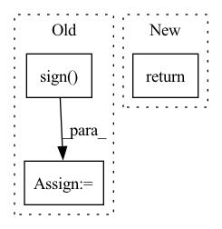

Pattern ID :26587
Before Change
rel_pos = rearrange(grid, "i c -> i 1 c") - rearrange(grid, "j c -> 1 j c")
if self.log_dist:
rel_pos = torch.sign( rel_pos) * torch.log(rel_pos.abs() + 1)
self.register_buffer("rel_pos", rel_pos, persistent = False)
After Change
// now select the bias for each unique relative position combination
bias = bias[rel_dist_indices]
return rearrange(bias, "i j h -> h i j")
// helper classes
In pattern: SUPERPATTERN
Frequency: 5
Non-data size: 3
Instances Fragment ID: 79634508
Project Name: lucidrains/make-a-video-pytorch
Commit Name: b6e0a17c5488b923d884272f7e46170352b0f0d5
Time: 2023-03-18
Author: lucidrains@gmail.com
File Name: make_a_video_pytorch/make_a_video.py
M Class Name: ContinuousPositionBias
N Class Name: ContinuousPositionBias
M Method Name: forward(1)
N Method Name: forward(1)
M Parent Class: nn.Module
N Parent Class: nn.Module
M File Name: make_a_video_pytorch/make_a_video.py
N File Name: make_a_video_pytorch/make_a_video.py
M Start Line: 110
M End Line: 126
N Start Line: 105
N End Line: 142
Before Change
segs_p = boxes[:, [project_axis, 3+project_axis]]
dist_p = seg1d_pdist(points_p, segs_p)
sign = torch.min(dist_2d.sign() , dist_p.sign())
dist = torch.sqrt(dist_2d.square() + dist_p.square())
return sign * dist
After Change
torch.where(dist_2d > 0, torch.min(dist_p, dist_2d), dist_2d),
torch.where(dist_2d > 0, dist_p, -torch.sqrt(dist_2d.square() + dist_p.square()))
)
return dist
Fragment ID: 79634523
Project Name: cmpute/d3d
Commit Name: 634cbafe5f4e96dde8e6101866224118ce270123
Time: 2021-03-30
Author: cmpute@qq.com
File Name: d3d/box/__init__.py
M Class Name: AnonimousClass
N Class Name: AnonimousClass
M Method Name: box3dr_pdist(3)
N Method Name: box3dr_pdist(3)
M Parent Class:
N Parent Class:
M File Name: d3d/box/__init__.py
N File Name: d3d/box/__init__.py
M Start Line: 367
M End Line: 375
N Start Line: 367
N End Line: 378
Before Change
if ctx.sign_grad :
grad_P1 = grad_P1.sign()
grad_P2 = grad_P2.sign()
return grad_input, grad_weight, grad_P1, grad_P2, grad_bias, None, None, None, None, None, None After Change
if bias is None:
grad_bias = None
return grad_input, grad_weight, grad_P1, grad_P2, grad_bias, None, None, None, None, None
Fragment ID: 79634522
Project Name: k-h-ismail/dilated-convolution-with-learnable-spacings-pytorch
Commit Name: 538559765f01400158faf8ab4157c34faf77ad4d
Time: 2022-11-17
Author: khalfaoui.ismail@hotmail.com
File Name: DCLS/functions/dcls_functionnal.py
M Class Name: dcls2d_conv
N Class Name: dcls2d_conv
M Method Name: backward(2)
N Method Name: backward(2)
M Parent Class: torch.autograd.Function
N Parent Class: torch.autograd.Function
M File Name: DCLS/functions/dcls_functionnal.py
N File Name: DCLS/functions/dcls_functionnal.py
M Start Line: 77
M End Line: 81
N Start Line: 76
N End Line: 76
Before Change
liad1 = liad1 * (np.abs(liad1) > liad_thresh)
sgn = np.sign( liad1)
nz = np.sum(sgn != 0, axis=-1)
ssgn = np.sum(sgn, axis=-1)
with np.errstate(divide="ignore", invalid="ignore"):After Change
liad1, _ = utils._liad(z, a, order=1, mode=liad_mode, return_list=False)
return _get_monotonicity_from_liad(
liad1=liad1,
reduce_mode=reduce_mode,
liad_thresh=liad_thresh, Fragment ID: 79634521
Project Name: karnwatcharasupat/latte
Commit Name: 357c6ad5d4c4d6eeeec51b04d7fb59584a1adeab
Time: 2021-12-29
Author: karn001@e.ntu.edu.sg
File Name: src/latte/functional/interpolatability/monotonicity.py
M Class Name: AnonimousClass
N Class Name: AnonimousClass
M Method Name: monotonicity(8)
N Method Name: monotonicity(8)
M Parent Class:
N Parent Class:
M File Name: src/latte/functional/interpolatability/monotonicity.py
N File Name: src/latte/functional/interpolatability/monotonicity.py
M Start Line: 76
M End Line: 97
N Start Line: 107
N End Line: 113
Before Change
Returns:
torch.Tensor: sign of tensor x
sign_tensor = torch.sign( x)
sign_tensor[sign_tensor < 0] = 0
return sign_tensor
After Change
Returns:
torch.Tensor: sign of tensor x
return STE.apply(torch.where(x >= 0, torch.tensor(1., device=x.device), x))
Fragment ID: 79634516
Project Name: hpi-xnor/bitorch
Commit Name: 128dc0abd719591ec31963d0614ff7220cef0576
Time: 2021-10-10
Author: paul.mattes@student.hpi.de
File Name: bitorch/quantizations/steheaviside.py
M Class Name: SteHeaviside
N Class Name: SteHeaviside
M Method Name: quantize(2)
N Method Name: quantize(2)
M Parent Class: Quantization
N Parent Class: Quantization
M File Name: bitorch/quantizations/steheaviside.py
N File Name: bitorch/quantizations/steheaviside.py
M Start Line: 20
M End Line: 22
N Start Line: 20
N End Line: 20